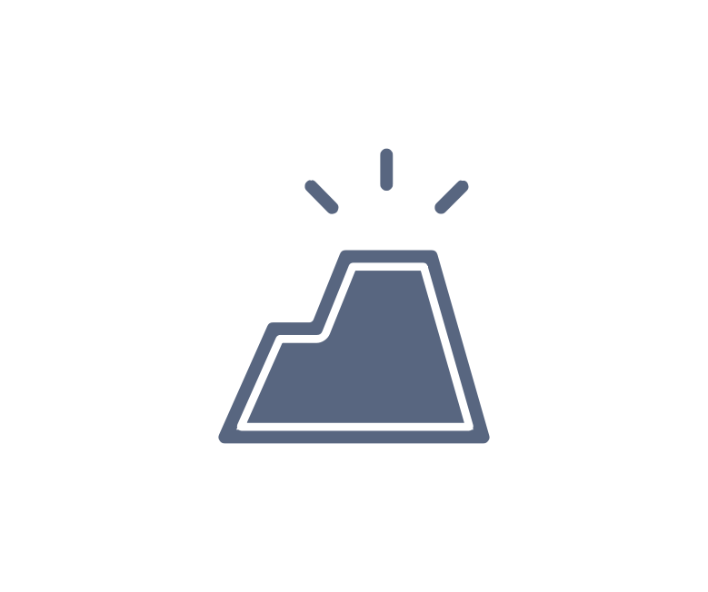

09:41
signal_cellular_alt
wifi
battery_full
RhythmQuake
地震与火山监测
演示数据 · 非实时
sensors
5弱
福岛县近海 · M5.8

樱岛 · 等级3
示例监测 · 日本
layers
add
remove
my_location
地震 · 火山图层
波圈
火山
©
OpenStreetMap
· 点位仅为示意
地震 · 火山
3 条情报
历史
chevron_right
当前
地震列表
监测与详情
thunderstorm
杭州市 · 暴雨黄色
cyclone
示例台风
示例预警 · 华东
warning_amber
地震板块有 1 条 EEW
chevron_right
layers
add
remove
my_location
气象图层
预警范围
台风
©
OpenStreetMap
· 区域仅为示意
气象
浙江省
09:40 示例快照
预警
台风
所在地
设置
RhythmQuake · 手机端
数据与账户
hub
数据源与登录
FAN API、WAuth 与独立来源
chevron_right
filter_alt
接收与过滤
机构、震级与事件类别
chevron_right
提醒与运行
volume_up
声音播报
EEW 与信息事件
notifications_active
系统通知
跨板块继续提醒
sync
后台运行
保持数据接收
界面
map
分别记住地图视野
地震 · 火山与气象
tune
高级设置
诊断、自动化与 OBS
chevron_right
研讨原型 · 设置仅影响本次演示
close
public
地震 · 火山
cloud
气象
settings
设置